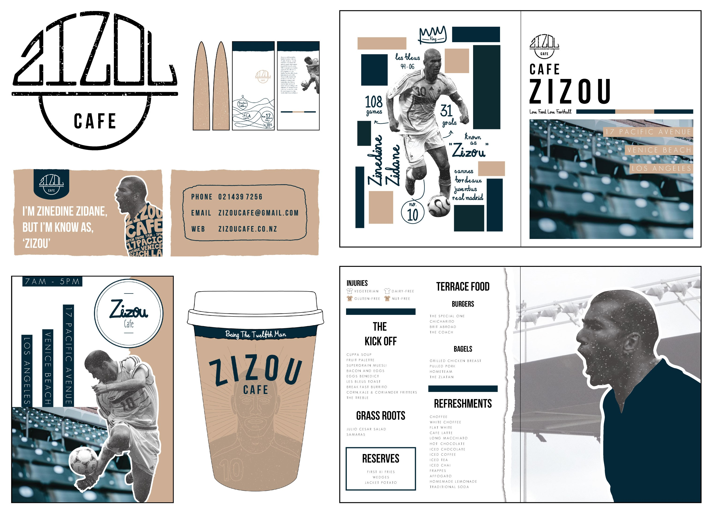

Zizou Cafe

This work is from my NCEA Level 3 Design folio in which I designed various forms of branding for Zizou, a madeup cafe inspired by football. The cafe is based in Los Angeles, America and intends to truly express the nation's passion and support towards the beautiful game. With its modern and creative approach, this cafe aims to bring together not only football fans but coffee lovers. Aiming to use aspects of the game not commonly highlighted, inspiration includes elements found off the pitch and away from the television screen, such as football fan culture through the incorporation of drawings, colours, typography and shapes. The style of the brand is somewhat modern with the use of lines and grids to create focal points and the introduction of original drawings to give the brand some character.